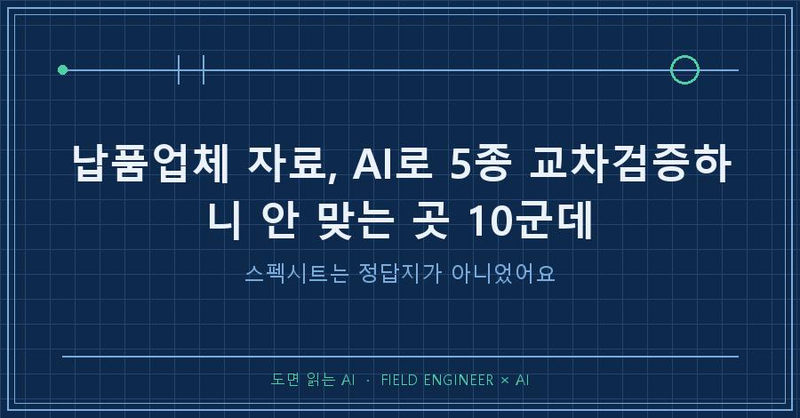
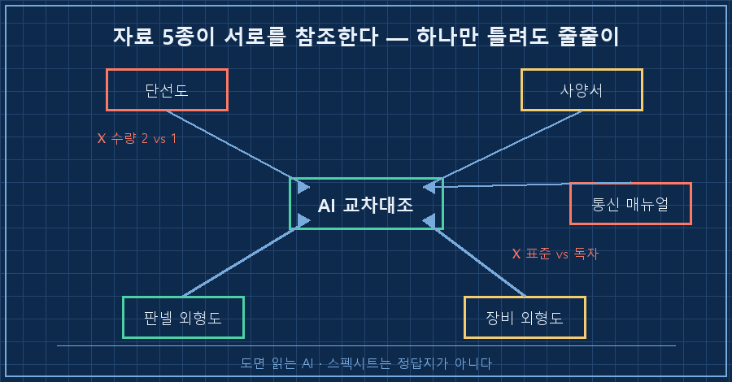
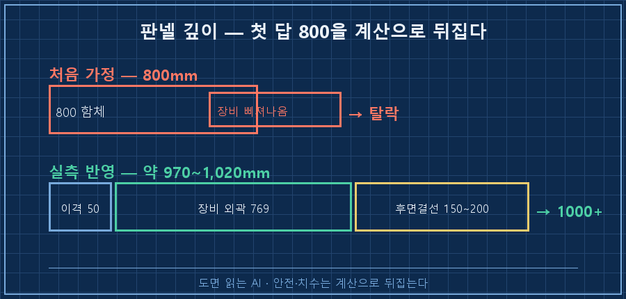
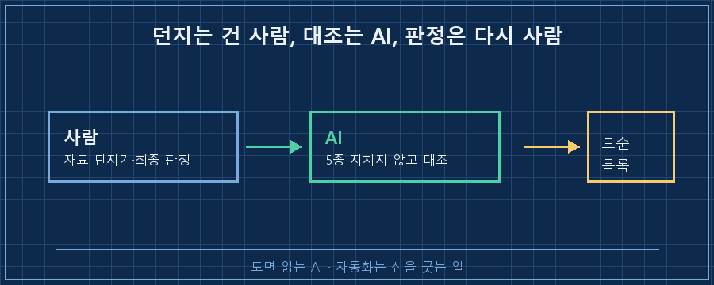

납품업체가 자료를 보내오면, 보통 그걸 정답지처럼 여기잖아요.
근데 이번엔 그 정답지들끼리 서로 안 맞았습니다.
결론부터 말씀드릴게요.
공급자가 준 스펙시트는 '정본'이 아니에요.
자료 5종을 통째로 AI에게 읽혀 납품 자료 교차검증을 돌렸더니, 사람이면 그냥 넘어갔을 모순이 10군데나 튀어나왔거든요.
그중엔 "장비가 몇 대냐"는 것조차 자료끼리 안 맞는 치명적인 것도 있었어요.
제 본업은 수소 설비 제어예요 — 판넬 설계, PLC 로직, 현장 커미셔닝.
AI는 그 일을 굴리는 도구로 씁니다.
이번엔 새 전력변환 장비 하나를 기존 설비에 붙이는 일이었어요.
1. 자료는 다섯 종인데, 하나씩 대조가 벅찼어요
업체가 보내준 건 다섯 종이었어요.
단선도, 장비 사양서, 통신 매뉴얼, 장비 외형도, 판넬 외형도.
문제는 이게 서로를 참조한다는 거예요.
단선도의 장비 수량이 사양서랑 맞아야 하고,
사양서의 전압이 통신 매뉴얼 설정이랑 맞아야 하고,
외형 치수가 판넬 도면이랑 맞아야 하고..
다섯 개를 머릿속에 동시에 띄워놓고 대조하려니 금방 벅차더라고요.
예전 같으면 눈으로 몇 번 왕복하다 "대충 맞겠지" 하고 넘어갔을 거예요.
근데 이번엔 다섯 종을 전부 AI한테 먹이고 딱 한 문장을 시켰어요.
"자료끼리 서로 안 맞는 데를 다 찾아봐."

2. 제일 먼저 걸린 건 "장비 몇 대냐"였어요
AI가 대조하면서 뱉은 목록이 꽤 길었는데, 압권은 수량이었어요.
[업체 자료 5종 교차대조 — 안 맞는 곳]
단선도 : 변환장치 2대 병렬
공급 목록 : 변환장치 1대 ← 여기서 이미 케이블이 통째로 바뀜
통신(단선도) : 표준 통신 방식
통신(매뉴얼) : 업체 독자 방식 ← PLC 드라이버 선정이 갈림
매뉴얼 출처 : 다른 제품군(배터리 계열) 문서를 재활용
전기 사양서 : 없음 ← 스택 전류 매칭 검증 불가도면엔 2대를 병렬로 붙이라고 그려져 있는데, 정작 공급 목록엔 1대만 적혀 있었어요.
이게 왜 치명적이냐면, 장비가 1대냐 2대냐에 따라 흐르는 전류가 반으로 갈리거든요.
그러면 케이블 굵기부터 차단기 용량까지 설계가 통째로 달라져요.
2대인 줄 알고 얇게 깔았는데 실제로 1대에 전류가 몰리면.. 그건 사고로 직결됩니다.
통신도 재밌었어요.
단선도엔 표준 통신 방식이라고 적혀 있는데, 통신 매뉴얼을 열어보니 업체가 만든 독자 방식이더라고요.
게다가 그 매뉴얼은 이 장비용이 아니라 다른 제품군 문서를 그대로 재활용한 거였어요.
용어가 우리 장비랑 안 맞아서, AI가 "이건 배터리 계열 장비 문서 같다"고 짚어줬죠.
3. AI 첫 답도 틀렸어요 — 판넬 깊이 이야기
여기서 하나 솔직하게 남길 게 있어요.
AI가 남의 자료만 잡은 게 아니라, 자기 첫 답도 틀렸거든요.
판넬 함체 깊이를 정해야 했는데, 제가 먼저 "800이면 되겠지" 했고 AI도 처음엔 수긍했어요.
근데 외형도의 실제 치수를 손잡이 끝부터 후면 단자까지 다시 재보니 이야기가 달라졌어요.
[판넬 깊이 재계산]
처음 가정 : 800mm 함체면 되겠지
실측 반영 : 장비 외곽(손잡이~후면 단자) 약 769mm
+ 전면 이격 50mm + 후면 결선 여유 150~200mm
합계 : 약 970 ~ 1,020mm → 800 함체 탈락, 1,000 이상 필요굵은 케이블은 꺾이는 반경이 있고, 단자 조일 공구도 들어가야 해요.
그 여유까지 더하니 800짜리 함체는 그냥 탈락이더라고요.
처음의 "800이면 되겠지"를 그대로 믿었으면 함체를 새로 짤 뻔했어요.

그래서 얻은 결론
이번 일로 정리된 건 두 가지예요.
하나, 공급자가 준 스펙시트는 정본이 아니에요.
여러 자료를 보내주지만 그것들끼리 안 맞는 경우가 생각보다 많아요.
AI 교차검증의 진짜 값은 없는 답을 지어내는 게 아니라, 안 맞는 걸 지치지 않고 대조하는 데 있더라고요.
둘, AI의 첫 답도 검증으로 뒤집어야 해요.
특히 수량·치수·전류처럼 안전과 직결된 항목은요.
AI가 "800이면 됨"이라고 해도, 안전 직결 항목은 반드시 계산으로 한 번 뒤집어보는 게 맞아요.

자주 묻는 질문
Q. 자료 대조는 사람이 눈으로 해도 되는 거 아닌가요?
할 수는 있는데, 다섯 종을 서로 왕복하며 대조하는 건 금방 지쳐요.
사람은 "아까 봤으니 맞겠지" 하고 건너뛰는데, AI는 안 지치고 전부 대봐요.
대신 걸린 모순이 진짜인지 판정하는 건 사람 몫이고요.
Q. AI가 없는 사실을 지어내면 어쩌죠?
그래서 "답을 내라"가 아니라 "자료끼리 안 맞는 데를 찾아라"로 시켜요.
자료 안에서 대조만 시키면 지어낼 여지가 줄어요.
그리고 걸린 건 원문에서 제 눈으로 다시 확인합니다.
정리하면요
납품 자료를 받으면 정답지처럼 믿기 쉬운데, 이번엔 다섯 종이 서로 열 군데나 어긋났어요.
수량 1 대 2, 재활용된 매뉴얼, 뒤집힌 판넬 깊이까지요.
AI를 쓴 값은 자료를 만들어준 게 아니라, 안 맞는 걸 끝까지 대조해준 데 있었습니다.
- ☐ 납품 자료끼리 수량·전압·치수가 서로 맞는지 대조했는가
- ☐ 통신 방식이 도면과 매뉴얼에서 같게 적혀 있는가
- ☐ 안전·치수 직결 항목은 AI 첫 답을 계산으로 뒤집어봤는가
여러분도 납품 자료 받아 검토하다가 "어? 이거 앞뒤가 안 맞네" 한 적 있으세요?
AI한테 자료 교차검증을 시키는 더 구체적인 방법은 makefield.ai에 하나씩 정리해 두고 있습니다.
---
태그: #납품자료검토 #스펙시트검증 #AI교차검증 #AI자료대조 #협력업체자료 #제어판넬설계 #PLC통신 #현장엔지니어 #제조업AI #AI실무 #도면검토 #설계검증 #AI문서검토 #케이블설계 #도면읽는AI